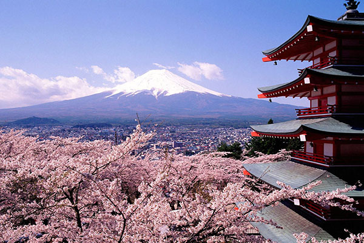

CAHYA TRAVEL TOUR
CAHYA TRAVEL TOUR adalah travel yang baru di tahun 2018 ini, travel ini membuka jasa untuk liburan keliling dunia dengan harga lebih terjangkau. Minat hubungi nomer ini : 0821888999111.
PEGUNUNGAN

Gunung Fuji
Shizuoka Jepang-3,7776 meter di atas laut
Gunung Fuji adalah gunung keabadian atau orang Jepang menyebutnya Fuji san (san berarti gunung, khusus untuk menyebut gunung Fuji) merupakan gunung berapi aktif yang terletak di perbatasan Prefektur Shizuoka dan Yamanashi. Ketinggian gunung Fuji adalah 3.776 M. Gunung ini adalah simbol bagi negara Jepang selain bunga sakura.
Gunung Fuji
Shizuoka Jepang-3,7776 meter di atas laut
Dibalik keindahan panoramanya Fujiyama memiliki legenda cerita yang menarik. Dikisahkan pada jaman dahulu kala hidup sepasang kakek nenek di desa terpencil. Pekerjaan sang kakek adalah sebagai penebang bambu. Sahabat anehdidunia.com pada suatu hari ketika sang kakek akan menebang bambu, ia melihat bambu yang bercahaya seperti emas. Karena penasaran, maka sang kakek memotong bambu tersebut dan ternyata di dalam bambu itu ditemukan anak perempuan yang kira-kira tingginya 9 cm.
PANTAI MALDIVES
Maldives
Maladewa(maldives) terletak di sebelah selatan-barat daya India, sekitar 700 km sebelah barat daya Sri Lanka
Nama Maladewa diambil dari bahasa Sankerta. Arti Mala itu sendiri adalah Untaian/Kalungan. Sementara Dvipa artinya Pulau. Bila disatukan kedua kata itu menjadi Untaian Pulau-Pulau. Negeri yang berdiri diantara banyak pulau. Pada masa kolonial Belanda. Orang-orang koloni menyebut Maladewa dengan Maldivische Eilanden. Kata itu tercatat dalam dokumen mereka. Sedangkan Maldive Islands adalah bahasa lidah yang keluar dari orang-orang Inggris.
Maldives
Maladewa(maldives) terletak di sebelah selatan-barat daya India, sekitar 700 km sebelah barat daya Sri Lanka
Konon legenda sejarah pulau ini, berawal dari seorang pangeran bernama Sinhalese. Pangeran terdampar dipulau ini bersama dengan pasangannya. Lalu duo sejoli ini menetap disini. Saking menikmati pesona pulau Maladewa. Mereka pun hidup hingga berabad-abad lamanya. Negeri yang terdiri dari pantai-pantai. Sehingga para pelaut dari Arab dan India pun mudah menemui pulau ini. Mereka tinggal hingga keturunan mereka beranak pinak. Perpaduan Arab-India nampak jelas diraut wajah masyarakatnya.
TEMBOK BESAR CHINA


Tembok Besar China
Jiayudi Provinsi Gansu-Tiongkok Barat-Sungai Yalu Provinsi Liaoning-Tiongkok Timur Laut
Awal mula dibangunnya Tembok Besar bertujuan untuk mempertahankan wilayah bangsa Chung Kuo (sebutan bangsa Cina kuno) dari serbuan suku Nomad dari utara. Pada masa Dinasti Qin, dimana saat itu yang berkuasa adalah Kaisar Shih Huang Ti, seorang kaisar besar yang berhasil menyatukan seluruh Cina, berniat untuk meneruskan usaha pembangunan tembok besar yang terbengkalai selama beberapa waktu karena kondisi perang antar kerajaan. Pada tahun 221 SM, Shih Huang Ti memeberi perintah untuk menyambung bangunan tembok yang belum jadi dan melanjutkan rute pembangunannya sejauh 5.000 km.
Tembok Besar China
Jiayudi Provinsi Gansu-Tiongkok Barat-Sungai Yalu Provinsi Liaoning-Tiongkok Timur Laut
Pembangunan Tembok Besar sangatlah tepat mengingat fungsinya amat penting untuk menahan ancaman dari suku Nomad yang ingin merebut wilayah kekuasaan. Tembok Besar ini dibangun di atas puncak-puncak pegunungan yang tinggi dan berbahaya, dimana dinding raksasa yang dibuat menggunakan susunan batu, bata, kayu tanah dan semen menjadikannya tangguh dan tahan terhadap cuaca selama berabad-abad. Sepeninggal era Shih Huang Ti dan digantikan oleh Dinasti Han pada tahun 206-220 M. Selama berabad-abad lamanya Tembok Besar menjadi benteng pertahanan yang sangat berharga disamping fungsinya sebagai pembatas dari dunia luar serta melindungi hasil pertanian yang terkenal subur.